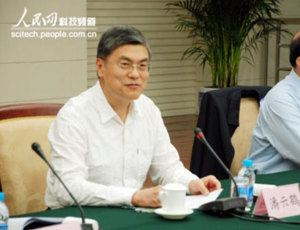
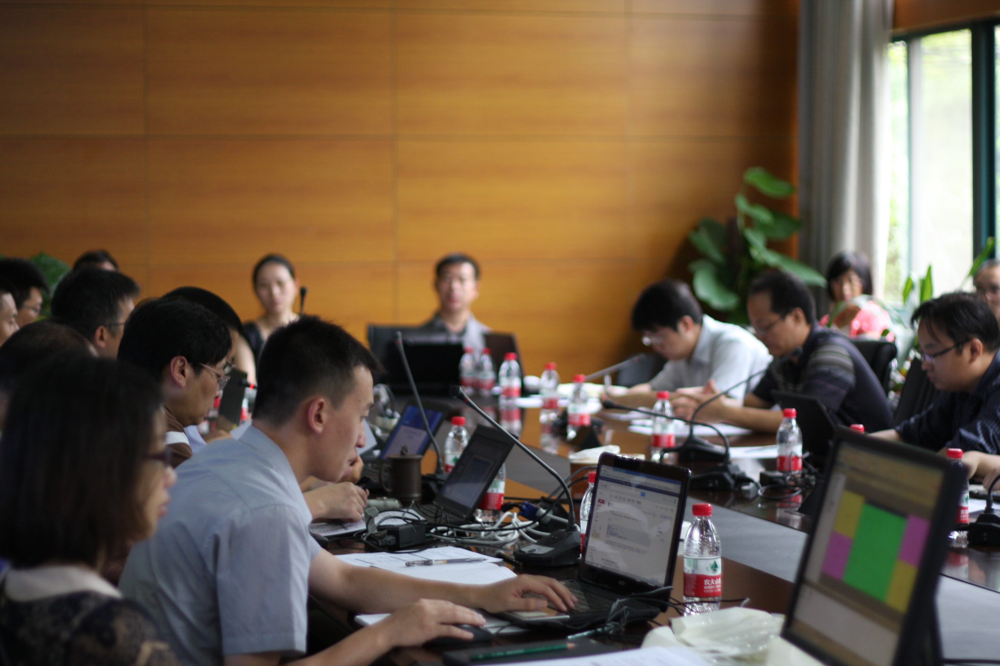
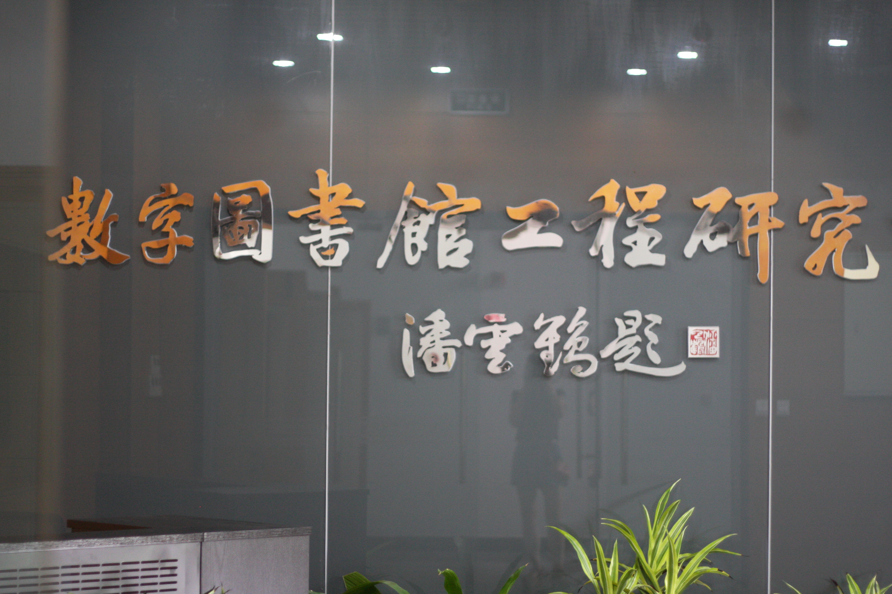
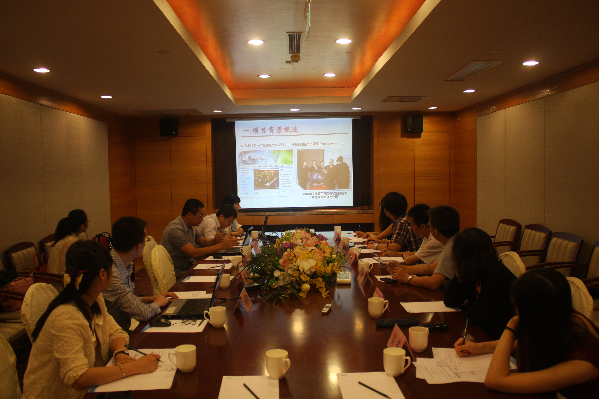
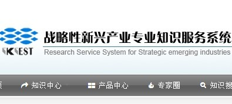

-
6月14日
中国工程科技知识中心建设项目2013年第二次工作会议
----6月14日 汇报人：黄萃老师 汇报主要内容：专业知识服务系统功能设想， ① 数据库数据边界设定难点及疑问； ② 系统亮点现有基础及数据来源； ③工作机制、前景展望及计划进度。
潘云鹤院士指示工作： ① 要努力建设成为中国工程科技智慧知识中心，建议补充战略新兴产业产品目录中的七百余个产品数据（产品说明书、产品列表）； ② 争取建设后期，数据库与其它项目打通（中草药、金属材料等），并可以交叉使用； ③ 关于系统演示，要更多的展示知识系统如何学习，并且建设系统的重点要放到服务对象-专家； ④ 让系统更好的被用起来，服务起来。 -
6月-7月
项目学习交流与技术培训
----6月-7月 6月中，浙江大学图书馆-张寅老师 探讨数字图书馆建设经验；
6月中，浙江大学图书馆-张寅老师 探讨数字图书馆建设经验；
6月底，钢研院-钢铁材料专业知识服务系统子项目-王卓老师 探讨项目经验。
7月初，国家会议中心-工程院，与重点子项目工作人员及领导准备向财政部领导汇报工作的材料。4天的会议期间向各项目专家领导取经学习。
7月底，国家信息中心-战略性新兴产业项目的同志到清华来访，讨论数据合作方案等 -
7月-8月
项目研讨会-邬贺铨院士指导项目工作
----6月27日 2013年6月27日晚，项目研讨会在北京会议中心召开。项目负责人邬贺铨院士听取了工作组关于项目前期工作进展情况和系统功能设想的工作汇报，并对数据方案、功能架构、设计方案等工作请示给予了回复和解答，并商议部署了下阶段工作计划要点。
2013年6月27日晚，项目研讨会在北京会议中心召开。项目负责人邬贺铨院士听取了工作组关于项目前期工作进展情况和系统功能设想的工作汇报，并对数据方案、功能架构、设计方案等工作请示给予了回复和解答，并商议部署了下阶段工作计划要点。 -
8月-9月
项目需求调研及研讨工作会议
----8月8日 2013年8月8日，“战略性新兴产业专业知识服务系统”第一次召开工作研讨会议。这次会议初步确立了工作组之后的发展方向。
在接下来的时间，截止到9月底，工作组进行了十二次的工作研讨会议，包括系统需求分析、概要设计、Demo等内容的研究与讨论。 -
8月26日
中国工程科技知识中心项目培训-杭州
----8月26日~27日2013年8月26日至2013年8月27日，在浙江大学图书馆进行了为期2天的培训，项目组全部人员及清软英泰技术人员全部参加培训，通过理论和技术培训使技术人员对知识服务系统的模型、数据组织、接口等技术有所了解，知道如何在已有基础上构建知识服务系统；通过交流、讨论了解各专业知识服务系统承担单位的数据、信息化基础和应用需求。
会议中各子中心专家对各自的系统亮点及功能模块进行了介绍，在介绍介绍后大家进行了充分的交流与讨论 -
9月5日
中国工程科技知识中心建设项目2013年第三次工作会议
----9月5日2013年9月5日,中国工程科技知识中心2013年项目建设第三次工作会议在杭州召开。项目负责人、中国工程院常务副院长潘云鹤院士，中国工程院白玉良秘书长以及来自中国工程院、钢铁研究总院、清华大学、浙江大学的各子项目组负责人和专家出席了会议。会议由工程院办公厅副主任宋德雄、浙江大学计算机学院院长庄越挺主持。
黄萃老师在会议中汇报了项目组近期工作情况，各位领导、专家给予指导、建议。 -
9月14日
“战略性新兴产业专业知识服务系统”工作组向工程院领导汇报
----9月14日 2013年9月14日组织数据合作单位如国家信息中心相关同志，举行了向工程院领导汇报近期工作的会议。工程院宋德雄主任、高祥老师、金言老师；战略研究院苏竣副院长、黄萃老师及项目组工人员；国家信息中心钟晨等工作人员参与了这次会议。
会议主要由黄萃老师汇报了工作组近期工作。苏竣院长及宋德雄主任分别对工作组的工作进行了指示，并对工作组近期工作作出了充分肯定。 -
9月24日
Demo视频素材制作工作会议
----9月24日 潘院长在9月5日“中国工程科技知识心2013年项目建设第三次会议”会后指示：向财政部正式汇报时间初步定在10月初，各分中心9月底之前做出一个Demo视频初稿。
工作组围绕这一工作，工作组对Demo素材围绕“战略性新兴产业专业知识服务系统”2个亮点功能，进行了全面调整与美化，配合视频脚本向浙大发送了9月24日修订版素材。